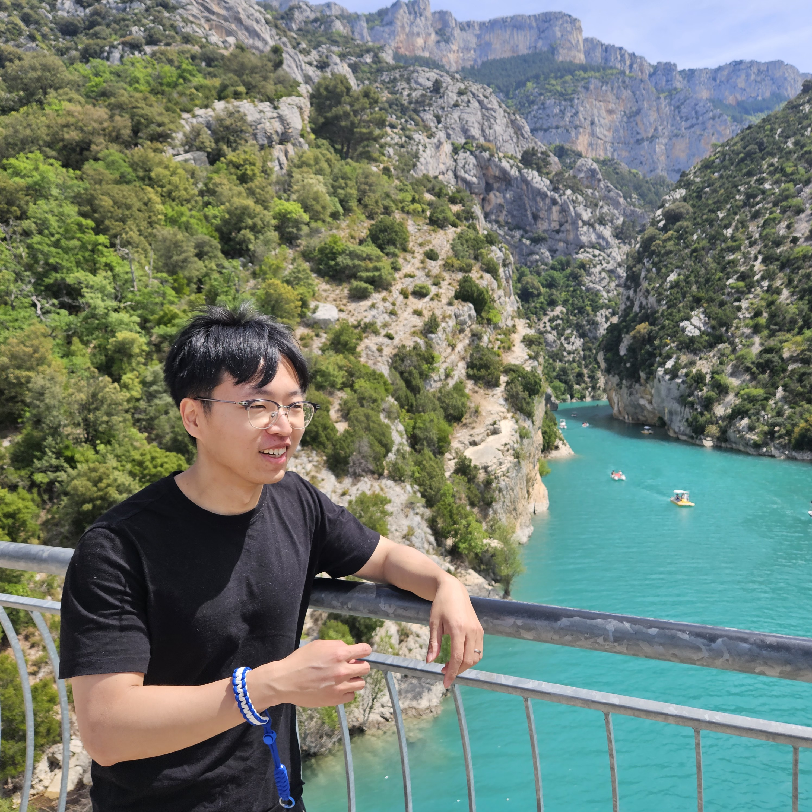

Reactor Multiphysics Coupling
Coupling neutronics and thermal hydraulics across 1D, subchannel, and 3D models for local feedback analysis during rapid reactor transients.
High-fidelity multiphysics simulation for advanced nuclear systems.
I develop computational methods that connect physical modeling, numerical algorithms, code implementation, and high-performance computing. My work spans particle-based CFD, severe-accident analysis, reactor multiphysics, and digital-twin-enabling technologies.

About
My research combines nuclear thermal hydraulics, neutronics, structural mechanics, and scientific computing to build reliable simulation tools for complex reactor phenomena.
I received my Ph.D. in Nuclear Engineering from Seoul National University, where I developed GPU-accelerated smoothed particle hydrodynamics methods for multiphase flows, highly viscous fluids, corium spreading, and severe-accident applications.
I am currently an Assistant Professor at JBNU Quantum Engineering, where I lead research in multiphysics simulation, particle-based CFD, severe-accident analysis, and high-performance computing for advanced nuclear systems.
Rather than treating simulation software as a black box, I focus on the complete computational science workflow: formulation, discretization, solver design, parallel implementation, verification, validation, and physical interpretation.
Research directions
My long-term goal is to advance high-fidelity, multiphysics, and multiscale technologies that support safer reactor design, best-estimate analysis, and future digital twins.
Coupling neutronics and thermal hydraulics across 1D, subchannel, and 3D models for local feedback analysis during rapid reactor transients.
SPH methods for multiphase flow, free surfaces, highly viscous corium, spreading, impact, fragmentation, and coupled fluid–structure interaction.
Matrix-free algorithms, multi-GPU parallelization, dynamic load balancing, and scalable solver design for computationally intensive nuclear engineering problems.
High-fidelity simulation, uncertainty quantification, reduced-order models, and AI acceleration as enabling layers for predictive digital engineering.
Current research highlight
I am developing and assessing APOLLO3®–CATHARE3 coupled simulations for CABRI reactor transients. The work examines power-to-temperature feedback, local subchannel behavior, spatial mapping, and the transition from simplified 1D models to multidimensional analysis.
Working experience
My experience has progressed from original GPU-based CFD development to institutional multiphysics platforms and reactor-scale coupled analysis.
JBNU Quantum Engineering, Korea
Multiphysics simulation, particle-based CFD, severe-accident analysis, and high-performance computing for advanced nuclear systems.
CEA Cadarache, France
Multiphysics coupling of APOLLO3® and CATHARE3 for CABRI RIA analysis; local and multidimensional neutronics–thermal-hydraulics feedback modeling.
Seoul National University, Korea
Particle-based high-fidelity simulation, severe-accident applications, GPU solver development, and collaborative nuclear system modeling.
Education
Foundation in nuclear engineering theory and research methods for computational multiphysics and high-performance scientific computing.
Seoul National University, Korea
Dissertation: Multiphase ALE-SPH for Versatile Approaches on Highly Viscous Corium Simulation. Advisor: Prof. Eung Soo Kim.
Seoul National University, Korea
Undergraduate studies in nuclear engineering and leadership experience as chair of an SNU educational outreach club.
Selected publications
A compact selection is shown here so that visitors can understand the research trajectory quickly. The complete and current list is available on Google Scholar.

Comparative study of WCSPH, EISPH and Explicit Incompressible-Compressible SPH for multi-phase flow with high density difference

A simple Eulerian–Lagrangian weakly compressible smoothed particle hydrodynamics method for fluid flow and heat transfer

GPU-based SPH-DEM method to examine the three-phase hydrodynamic interactions between multiphase flow and solid particles

Effect of wettability on the water entry of spherical projectiles: Numerical analysis using smoothed particle hydrodynamics

Development of multi-GPU-based smoothed particle hydrodynamics code for nuclear thermal hydraulics and safety: potential and challenges

Heat transfer enhancement in dry cask storage for nuclear spent fuel using additive high density inert gas
Tip: keep the homepage list selective. Add a separate publications.html page later for the full journal, conference, and invited-talk record.
Conference presentations
Presentations at peer-reviewed conferences and invited talks spanning multiphase flow, thermal hydraulics, reactor physics, and computational methods.
Multiphysics Coupling of APOLLO3 and CATHARE3 via the C3PO Platform for Analysis of CABRI Power Transients
A Smoothed Particle Hydrodynamics Model for Safety Assessment of the Ex-vessel Core Catcher under Reactor Vessel Failure
Particle-Based Approaches to Multiphysics Simulation in Nuclear Safety
Numerical Analysis of Melting and Interfacial Flow in a Direct-Contact Latent Heat Storage System Reflecting the Marangoni Effect
Investigation on the Safety Assessment of an Ex-vessel Core Catcher under Large-break Reactor Vessel Failures Using Smoothed Particle Hydrodynamics
Numerical Investigation of Corium Spreading Phenomena using Smoothed Particle Hydrodynamics
Dynamic Modeling for 20 kWe Heat Pipe Fission Battery with Dual Power Conversion System
Dynamic Modeling of Free Piston Stirling Generator for Micro Nuclear Reactors
GPU-accelerated Explicit Incompressible-Compressible SPH for multi-phase flow with large density difference
Development of an Eulerian–Lagrangian Coupling Method Using SPH
Comparative Analysis of Recent Pressure-Noise Reduction Methods for Free-Surface Flow and Fluid–Structure Interaction Using SPH
Numerical Simulation on Spreading and Impact Behavior of a Single Droplet Using Smoothed Particle Hydrodynamics
Heat Transfer Enhancement of Dry Cask Storage System Using Binary Helium and Heavy Inert Gas Mixture
Thermal Performance Enhancement of Dry Cask Storage System Using Helium-Based Binary Gaseous Mixture
The investigation of flow characteristics in 3-pin wire-wrapped fuel bundle using laser-based measurement techniques
Software & computational methods
Open-source and collaborative platforms for multiphysics, thermal hydraulics, and high-performance computing in nuclear engineering.
NEA-1911 · OECD-NEA Official Repository
Description: SOPHIA is a GPU-enabled, particle-based multiphase flow solver built on smoothed particle hydrodynamics (SPH),
Lagrangian discretization, and matrix-free iterative solvers. Designed for high-fidelity thermal-hydraulic analysis of corium
spreading, severe accidents, free-surface dynamics, highly viscous multiphase systems, and fluid–structure interaction.
Principal Investigator: Prof. Eung Soo Kim
Co-Developers: Y. B. Jo, S. H. Park, H. Y. Choi, T. S. Choi, S. S. Park, H. S. Yoo, Y. L. Ahn, J. H. Kim, T. H. Lee, H. Chae, J. M. Park, J. R. Kim, D. H. Kim
Professional activities
Contributions to peer review, teaching, mentoring, and outreach across national and international academic communities.
Selected recognition
Use this area for only the most meaningful distinctions; a short list communicates impact more effectively than a long catalogue.
NURETH-21.
Korean Nuclear Society Spring Meeting.
AIP Advances Editor’s Pick and IJNME Featured Cover.
Contact
I welcome research discussions and collaborations in reactor multiphysics, particle-based simulation, high-performance computing, severe accidents, and digital engineering for advanced reactors.